El juego del gato y el ratón
Cómo la Ciencia de Datos, el Machine Learning y la ingeniería de software intentan detener a los delincuentes financieros antes de que sea demasiado tarde.
Una compra, unos pocos milisegundos, una decisión que puede costar millones
Son las 14:32 de un martes. Alguien compra un teléfono celular por Internet. Detrás de esa acción aparentemente sencilla ocurre algo extraordinario.
Una persona está comprando un teléfono celular por Internet. Ingresa los datos de su tarjeta de crédito, confirma la operación y espera unos segundos.
Pero detrás de esa acción aparentemente sencilla ocurre algo extraordinario. En una fracción de segundo, los sistemas de una entidad financiera reciben la información de la compra, analizan el comportamiento histórico del titular, comparan la operación con millones de transacciones anteriores y evalúan si existe alguna señal de fraude.
¿Es habitual que esa persona compre productos de ese valor? ¿Está realizando una compra desde una ubicación desconocida? ¿Hizo otras operaciones sospechosas minutos antes? ¿El dispositivo utilizado ya apareció en transacciones fraudulentas?
El sistema debe decidir qué hacer: aprobar, rechazar o solicitar una verificación adicional. Todo esto sucede mientras el cliente espera frente a una pantalla.
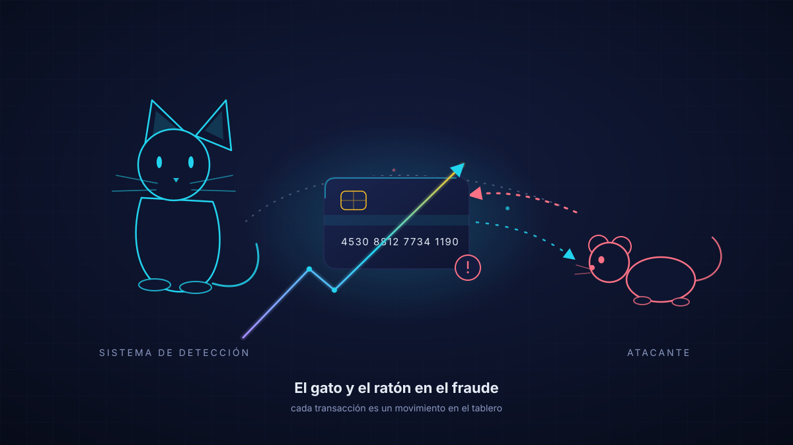
Lo interesante es que el sistema no tiene certeza absoluta. No sabe con seguridad si está frente a una compra legítima o ante un delincuente que acaba de obtener los datos de una tarjeta. Tiene que tomar una decisión utilizando probabilidades, patrones de comportamiento y datos que pueden estar incompletos.
Y aquí aparece uno de los problemas más interesantes de la Ciencia de Datos aplicada al mundo financiero: detectar fraudes no es solamente un problema de clasificación. Es un problema de decisiones bajo incertidumbre, restricciones de tiempo y consecuencias económicas reales.
Buscar una aguja en un océano de transacciones
El primer desafío de cualquier proyecto de detección de fraude: el desbalance extremo de clases.
Uno de los primeros desafíos que enfrenta cualquier proyecto de detección de fraude es un problema conocido como Class Imbalance o desbalance de clases.
Para entenderlo, imaginemos que un banco procesa un millón de transacciones. De todas ellas, 999.000 son legítimas y solamente 1.000 corresponden a operaciones fraudulentas. El fraude representa apenas el 0,1 % de las operaciones.
Ahora imaginemos que construimos un modelo de Machine Learning con una estrategia bastante sencilla: aprobar absolutamente todas las transacciones.
¿El resultado? El modelo obtiene un 99,9 % de accuracy (exactitud). A primera vista parece extraordinario. Sin embargo, acaba de cometer un error gravísimo: no detectó ni un solo fraude.
Este ejemplo demuestra por qué la exactitud puede ser una métrica engañosa cuando trabajamos con datos extremadamente desbalanceados. No alcanza con preguntarse cuántas predicciones fueron correctas: también necesitamos saber cuántos frauds conseguimos detectar y cuántas operaciones legítimas rechazamos por equivocación.
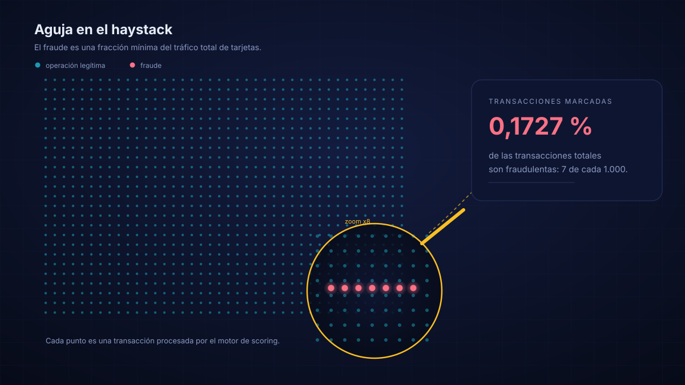
Por eso aparecen otras métricas fundamentales:
- Precision: de todas las operaciones que el modelo identificó como fraudulentas, ¿cuántas realmente lo eran?
- Recall: de todos los fraudes existentes, ¿qué porcentaje conseguimos detectar?
- F1-score: combina precision y recall en una única medida.
- PR-AUC: permite evaluar el equilibrio entre precision y recall a distintos umbrales de decisión, y suele resultar especialmente informativa cuando los fraudes son poco frecuentes.
También existen técnicas para enfrentar este problema, como el sobremuestreo de la clase minoritaria, el submuestreo de la clase mayoritaria y los algoritmos que incorporan ponderaciones diferentes para cada clase.
Sin embargo, hay algo importante: generar artificialmente más ejemplos de fraude no significa crear nuevos fraudes reales. Las técnicas de balanceo deben utilizarse cuidadosamente y sin contaminar los datos de evaluación.
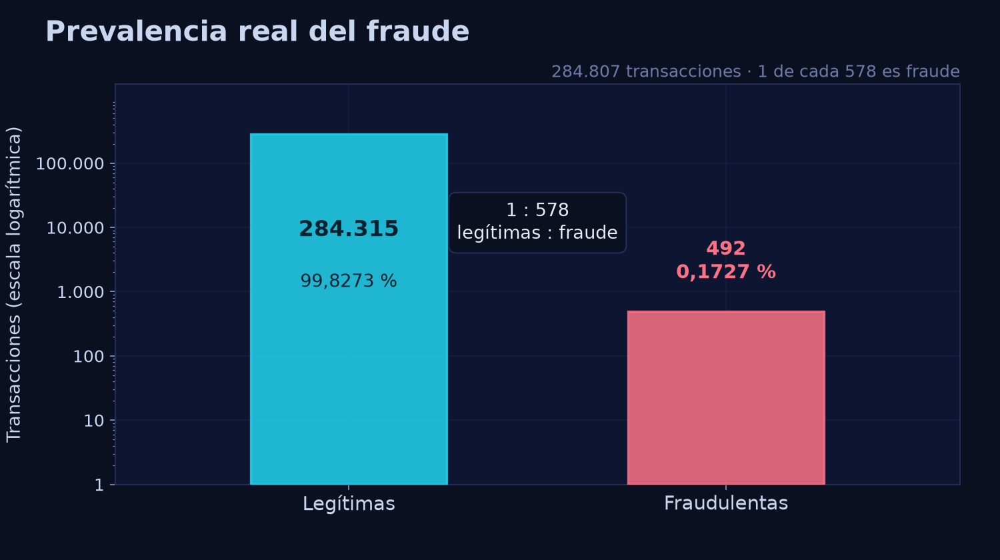
Decidir antes de que el cliente pierda la paciencia
Un modelo brillantemente preciso que tarda demasiado en responder es, para una autorización, un modelo inútil.
Imaginemos que estamos frente a una caja registradora. Pasamos la tarjeta, esperamos la autorización y, después de varios segundos, aparece un mensaje: operación rechazada. La experiencia sería bastante frustrante.
Ahora traslademos esa situación a millones de operaciones diarias. Un sistema de detección de fraude no puede tomarse varios minutos para analizar una compra. Debe responder prácticamente en tiempo real.
En la industria se habla de Latency y de acuerdos de nivel de servicio conocidos como SLA (Service Level Agreements). La latencia representa el tiempo que transcurre desde que el sistema recibe una solicitud hasta que devuelve una respuesta. En muchos sistemas de autorización financiera, el presupuesto de tiempo disponible puede ser de apenas decenas o cientos de milisegundos, dependiendo de la arquitectura y del contrato con los participantes de la red de pagos.
¿Por qué es tan complicado? Porque el modelo no trabaja aislado. Para evaluar una operación puede necesitar:
- Recibir la transacción.
- Validar sus datos.
- Consultar información histórica del cliente.
- Calcular características de comportamiento.
- Ejecutar el modelo predictivo.
- Aplicar reglas de negocio.
- Devolver la decisión al sistema de autorización.
Cada paso consume tiempo. Y si alguno de los servicios externos responde lentamente, toda la operación puede retrasarse.
Por eso, un proyecto profesional de detección de fraude no debe limitarse a medir qué tan rápido predice un modelo en una computadora. También debe medir la latencia de todo el sistema, especialmente los percentiles P95 y P99.
¿Qué soluciones se utilizan? Sistemas de procesamiento en memoria, bases de datos optimizadas para consultas de baja latencia, cachés para recuperar información frecuentemente utilizada, arquitecturas de procesamiento de eventos, modelos optimizados para inferencia rápida y servicios distribuidos y escalables.
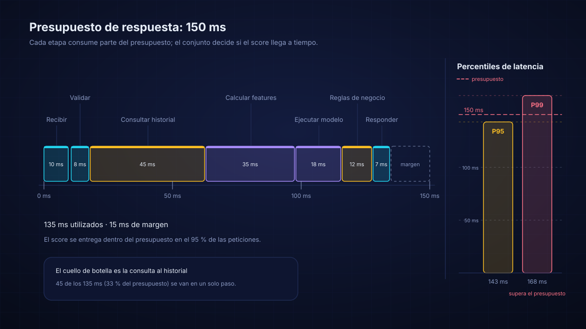
Una lección importante: un modelo extraordinariamente preciso que tarda demasiado en responder puede ser inútil para una operación que necesita autorización inmediata.
Feature Engineering: descubrir el comportamiento detrás de cada compra
Esta es, posiblemente, una de las partes más interesantes de un proyecto de detección de fraude.
Imaginemos que una persona realiza una compra de 80.000 pesos. ¿Es una operación sospechosa? La respuesta es: depende. Para una persona que habitualmente realiza compras de 10.000 pesos, podría ser una operación inusual. Para otra que realiza compras de 200.000 pesos diariamente, podría ser completamente normal.
El importe por sí solo no cuenta toda la historia. Aquí entra en juego la Feature Engineering o ingeniería de características: transformar los datos disponibles en variables que permitan comprender mejor el comportamiento de una operación.
En lugar de observar solamente cuánto dinero gastó una persona, podemos analizar cómo se relaciona esa compra con su comportamiento habitual.
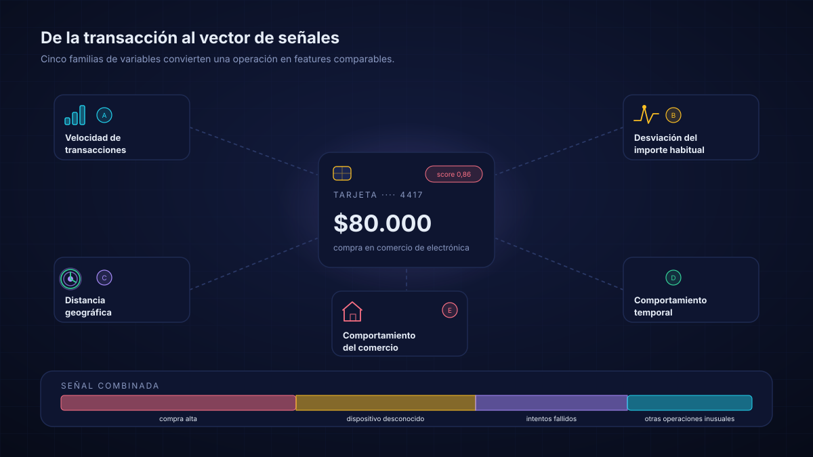
A. Velocidad de transacciones. ¿Cuántas compras realizó el titular durante los últimos cinco minutos? Si normalmente realiza dos compras por día y de repente aparecen quince operaciones en tres minutos, puede existir una señal de alerta.
B. Desviación del importe habitual. ¿Cuánto se aleja el importe de la compra actual respecto de los importes habituales del cliente? Una compra de 100.000 pesos puede ser normal para una persona y extraordinaria para otra.
C. Distancia geográfica y velocidad de desplazamiento. Imaginemos que una tarjeta registra una compra en Buenos Aires y, apenas cinco minutos después, otra en una ubicación geográficamente muy distante. ¿Es físicamente posible que el titular haya realizado ambas operaciones? Esta señal puede ayudar a detectar el uso indebido de una tarjeta, aunque debe contemplar situaciones como compras online, VPN, errores de geolocalización y tarjetas utilizadas legítimamente por terceros autorizados.
D. Comportamiento temporal. ¿El cliente suele comprar durante la mañana y ahora está realizando una secuencia de operaciones a las cuatro de la madrugada? Los horarios también pueden aportar información, siempre que se interpreten considerando los hábitos individuales.
E. Comportamiento del comercio. ¿La compra se realizó en un comercio donde el cliente nunca había operado? ¿El comercio presenta una tasa inusualmente elevada de contracargos?
La verdadera potencia aparece al combinar. Una compra de importe elevado no necesariamente representa un fraude. Una compra en otro país tampoco. Pero una compra elevada, realizada desde un dispositivo desconocido, después de múltiples intentos fallidos y acompañada de otras operaciones inusuales puede representar un riesgo mucho mayor.
El desafío consiste en construir variables que permitan reconocer esas relaciones.
En nuestro dataset, la variable Amount es la única con significado de negocio directo. El resto de las variables de comportamiento son componentes PCA anonimizados: sabemos que V14 correlaciona −0,3025 con la etiqueta de fraude, pero no sabemos qué significa en el mundo real.
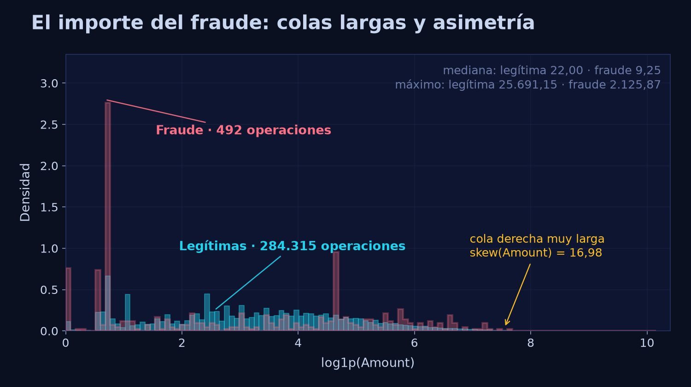
Amount = 16,98: la media es un pésimo resumen para esta variable.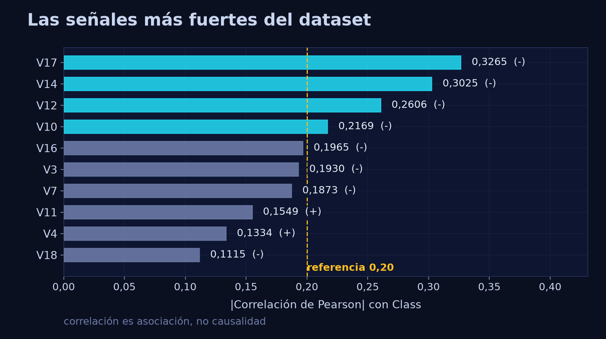
Class: V17 (−0,3265), V14 (−0,3025), V12 (−0,2606) y V10 (−0,2169). Son correlaciones, no mecanismos causales.El costo asimétrico del error: equivocarse nunca cuesta lo mismo
Dos predicciones incorrectas, dos consecuencias completamente distintas.
En muchos problemas tradicionales de Machine Learning podemos pensar que los errores tienen consecuencias relativamente similares. En la detección de fraude, esto está lejos de ser cierto.
Imaginemos que el modelo analiza dos operaciones: la operación A es una compra legítima que termina siendo rechazada; la operación B es una compra fraudulenta que termina siendo aprobada. Ambas son predicciones incorrectas, pero sus consecuencias son muy diferentes.
En el primer caso, el banco puede perder una venta, generar frustración en el cliente y provocar que este utilice otra tarjeta. En el segundo, puede perder dinero, afrontar costos operativos, gestionar un contracargo y perjudicar al titular de la tarjeta.
Esto se conoce como Cost Asymmetry o asimetría de costos.
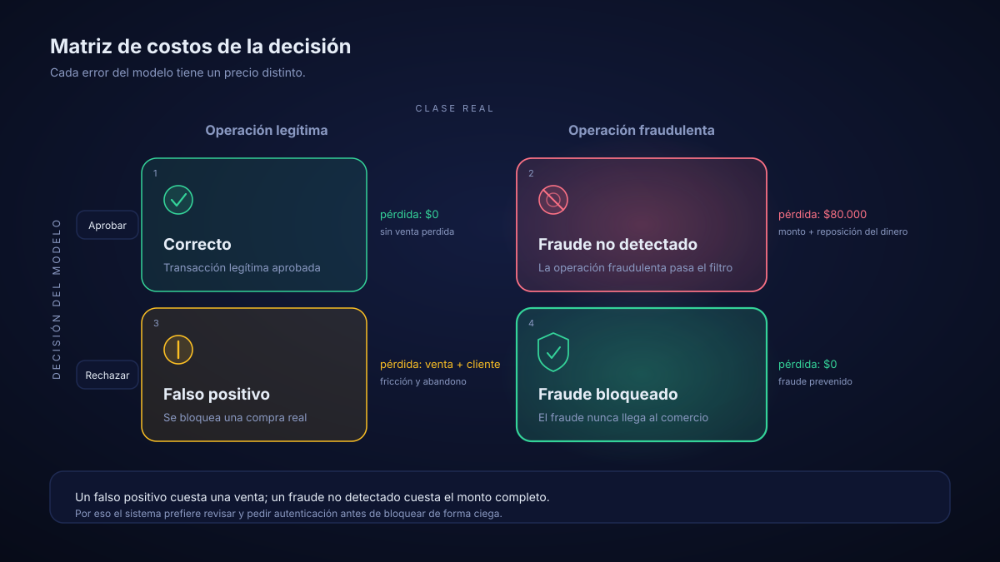
Los errores tienen nombres específicos: el falso positivo es el modelo que rechaza una compra legítima; el falso negativo es el modelo que aprueba una compra fraudulenta. En un proyecto real, ambos tienen costos económicos diferentes, y por eso no siempre conviene utilizar el umbral de clasificación tradicional de 0,5.
Supongamos que el modelo estima una probabilidad de fraude del 30 %. ¿Deberíamos rechazar la operación? No necesariamente. La decisión depende del importe involucrado, del costo potencial del fraude, del costo de rechazar una compra legítima y de las alternativas disponibles. Por ejemplo, podríamos establecer tres niveles:
- Riesgo bajo: aprobar automáticamente.
- Riesgo intermedio: solicitar autenticación adicional.
- Riesgo alto: bloquear o rechazar la operación.
Esto permite construir sistemas mucho más inteligentes que una simple respuesta de sí o no. En términos matemáticos, podemos representar el problema mediante una función de costo esperado:
Costo esperado = costo de falsos positivos
+ costo de falsos negativos
+ costos operativosLa finalidad no es maximizar una métrica de Machine Learning de manera aislada. Es minimizar las pérdidas esperadas sin deteriorar innecesariamente la experiencia del cliente.
Un modelo de fraude no debe ser solamente bueno prediciendo: debe ser bueno tomando decisiones económicamente razonables.
Concept Drift: cuando los delincuentes aprenden a engañar al modelo
Uno de los desafíos más fascinantes. Porque el otro lado del juego aprende.
Imaginemos que una entidad financiera desarrolla un modelo extraordinariamente efectivo. Durante varios meses detecta correctamente la mayoría de los fraudes. Sus métricas son excelentes y el sistema funciona de manera estable.
Sin embargo, un día los resultados empiezan a empeorar. Aumentan los fraudes que pasan inadvertidos. Aparecen patrones que el modelo nunca había visto. Algunas operaciones que antes eran fáciles de identificar ahora parecen completamente normales.
¿Qué ocurrió? El comportamiento del mundo cambió. En Machine Learning, este fenómeno puede estar relacionado con el Concept Drift: ocurre cuando cambia la relación entre los datos de entrada y el comportamiento que el modelo intenta predecir.
En el fraude financiero existen distintas causas:
- Los consumidores modifican sus hábitos de compra.
- Aparecen nuevos comercios y métodos de pago.
- Cambian las tendencias de consumo.
- Los delincuentes utilizan dispositivos, cuentas y estrategias diferentes.
- Surgen nuevas modalidades de robo de credenciales.
- Los atacantes modifican deliberadamente sus patrones para evitar ser detectados.
Este último punto merece especial atención. Un delincuente no es un fenómeno natural que permanece quieto esperando que un algoritmo lo estudie. Es un adversario que puede observar las medidas de seguridad, experimentar con diferentes estrategias y modificar su comportamiento.
Por eso, un sistema de detección de fraude se parece mucho a una carrera armamentista tecnológica. El banco desarrolla nuevas técnicas para detectar operaciones sospechosas. Los delincuentes buscan formas de evadirlas. El banco actualiza sus modelos y el ciclo vuelve a comenzar. Aquí aparece el concepto de Adaptive Adversary: un adversario que se adapta a las defensas existentes.
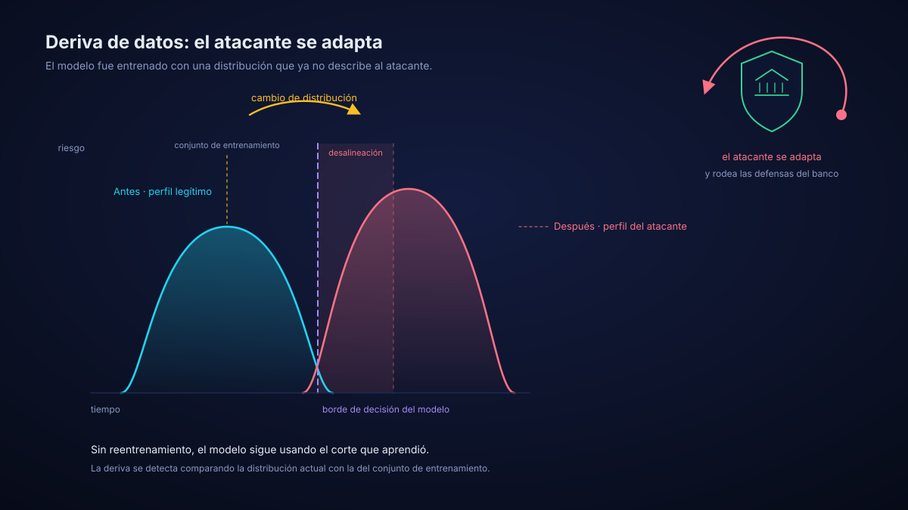
¿Cómo se enfrenta este problema? Mediante un proceso continuo de monitoreo y actualización:
- Monitorear las características de las transacciones.
- Detectar cambios en la distribución de los datos.
- Analizar cómo evolucionan las métricas del modelo.
- Investigar nuevas modalidades de fraude.
- Reentrenar y validar los modelos cuando sea necesario.
- Desplegar nuevas versiones de manera controlada.
Herramientas como MLflow pueden ayudar a registrar experimentos y versiones de modelos, mientras que sistemas de monitoreo permiten detectar cambios en los datos y en el rendimiento. Pero existe una dificultad adicional: muchas veces el resultado real de una transacción no se conoce inmediatamente. Una compra puede ser aprobada hoy y declarada fraudulenta semanas después. Por lo tanto, evaluar el rendimiento del modelo requiere considerar los retrasos en las etiquetas (label delay).
El problema de los datos: no todo lo que parece fraude realmente lo es
La calidad de las etiquetas y el momento en que se conoce la verdad.
Existe otro desafío que suele pasar inadvertido cuando comenzamos a estudiar Machine Learning: la calidad de las etiquetas. Para entrenar un modelo supervisado necesitamos ejemplos de operaciones legítimas y fraudulentas. Pero ¿cómo sabemos que una transacción fue realmente fraudulenta?
En muchos casos, la entidad financiera se entera cuando el titular reclama una operación, cuando se inicia una investigación o cuando aparece un contracargo. Esto genera una dificultad: el sistema puede recibir información sobre un fraude mucho tiempo después de que ocurrió. Además, no todos los fraudes son denunciados. Y una operación rechazada por el sistema probablemente nunca llegue a generar una etiqueta que permita saber qué habría sucedido si hubiese sido aprobada.
Este último fenómeno se relaciona con el Selective Labeling o etiquetado selectivo: el modelo influye en qué operaciones llegan a tener resultados observables. Por eso, los datos históricos no siempre representan de manera completa la realidad.
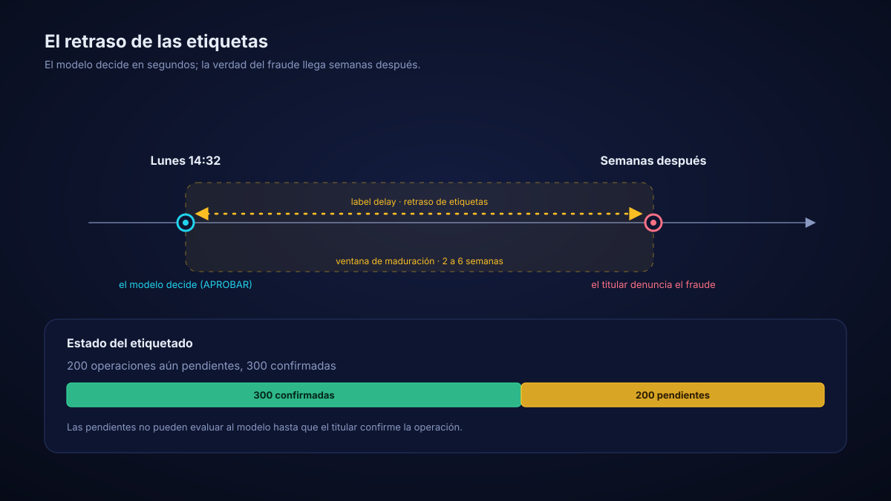
También debemos evitar una práctica peligrosa: utilizar información que no estaba disponible en el momento de realizar la predicción. Esto se conoce como Data Leakage. Por ejemplo, si entrenamos un modelo utilizando el resultado de una investigación que ocurrió dos semanas después de la compra, estaremos entregándole información del futuro. El modelo parecerá extraordinariamente preciso durante las pruebas, pero fracasará cuando tenga que trabajar en producción.
Por eso, en proyectos profesionales se utilizan divisiones temporales de los datos, validaciones que respetan el momento de cada transacción y controles rigurosos sobre la disponibilidad de las variables.
El caso extremo es el retraso de las etiquetas. Imaginemos que el sistema aprueba una compra el lunes. Todo parece normal: el cliente recibe su producto, el comercio recibe el pago. Pero dos semanas después, el titular se comunica con el banco y denuncia que nunca realizó esa compra. Ahora sabemos que aquella transacción era fraudulenta… y que el modelo tuvo que decidir dos semanas antes, cuando todavía no conocía ese resultado.
Esto genera un problema interesante: ¿cómo evaluamos el rendimiento de un modelo cuando todavía no sabemos si muchas de sus predicciones fueron correctas? Si durante una semana el modelo detecta 500 operaciones sospechosas, de las cuales solamente 300 fueron investigadas y clasificadas de forma definitiva, evaluar el modelo únicamente con las confirmadas nos da una imagen incompleta de su rendimiento.
Una práctica importante consiste en evaluar los modelos mediante ventanas temporales que respetan el tiempo real en que las etiquetas estuvieron disponibles, y monitorear cómo evolucionan las métricas a medida que llegan nuevas confirmaciones.
En la detección de fraude, a veces el algoritmo debe tomar una decisión hoy, pero la verdad sobre esa decisión recién aparece semanas después. Un modelo puede parecer excelente durante los primeros días simplemente porque todavía no conocemos todos los fraudes que dejó pasar.
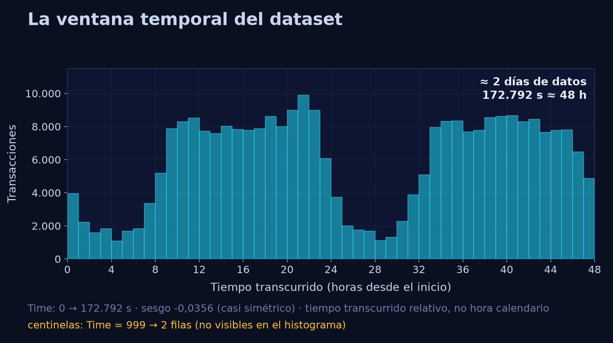
Graph Machine Learning: cuando el fraude deja de ser una operación aislada
El fraude no siempre se esconde dentro de una transacción; muchas veces se esconde en las conexiones entre transacciones.
Imaginemos que un banco detecta una compra sospechosa realizada con una tarjeta desconocida. A primera vista, parece un caso aislado. Sin embargo, al investigar un poco más descubre algo interesante: esa tarjeta utilizó el mismo dispositivo que otras cinco tarjetas, que realizaron compras en comercios diferentes, pero que comparten una misma dirección de entrega.
¿Casualidad? Tal vez. Pero también podría tratarse de una organización que utiliza múltiples tarjetas para realizar operaciones fraudulentas. Aquí aparece una idea poderosa: el fraude no siempre se esconde dentro de una transacción; muchas veces se esconde en las conexiones entre transacciones.
Los modelos tradicionales suelen analizar cada operación a partir de sus propias características. En cambio, Graph Machine Learning permite estudiar las relaciones entre diferentes entidades. Podemos representar el sistema como una red:
- Cada tarjeta es un nodo.
- Cada cliente es un nodo.
- Cada dispositivo es un nodo.
- Cada comercio es un nodo.
- Las relaciones entre ellos son las conexiones o aristas.
De esta manera, podemos descubrir patrones que serían difíciles de identificar observando las operaciones individualmente. Un modelo basado en grafos podría detectar que diez tarjetas aparentemente independientes, que operan en distintos comercios, forman parte de una estructura compartida.
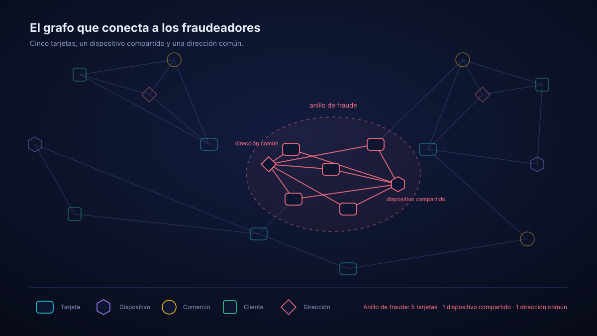
Explainable AI: cuando el banco necesita saber por qué el algoritmo sospecha
Un modelo que predice sin explicar no sirve para decidir. Y en fraude, casi siempre hay que decidir.
Imaginemos que una persona intenta comprar un electrodoméstico con su tarjeta de crédito. El modelo analiza la operación y determina que existe un riesgo elevado de fraude. El banco rechaza la compra. Pero aparece una pregunta fundamental: ¿por qué?
¿Porque el importe era demasiado elevado? ¿Porque el dispositivo era desconocido? ¿Porque se realizaron muchas compras en pocos minutos? ¿O porque existía una relación con otras operaciones sospechosas? Si el sistema simplemente responde «fraude», tenemos un problema.
En una industria donde las decisiones pueden afectar directamente a las personas y generar pérdidas económicas, no alcanza con que un algoritmo prediga. También necesitamos comprender sus decisiones. Aquí entra en juego la Explainable AI (XAI), o inteligencia artificial explicable, cuyo objetivo es proporcionar herramientas para entender qué factores influyeron en una predicción.
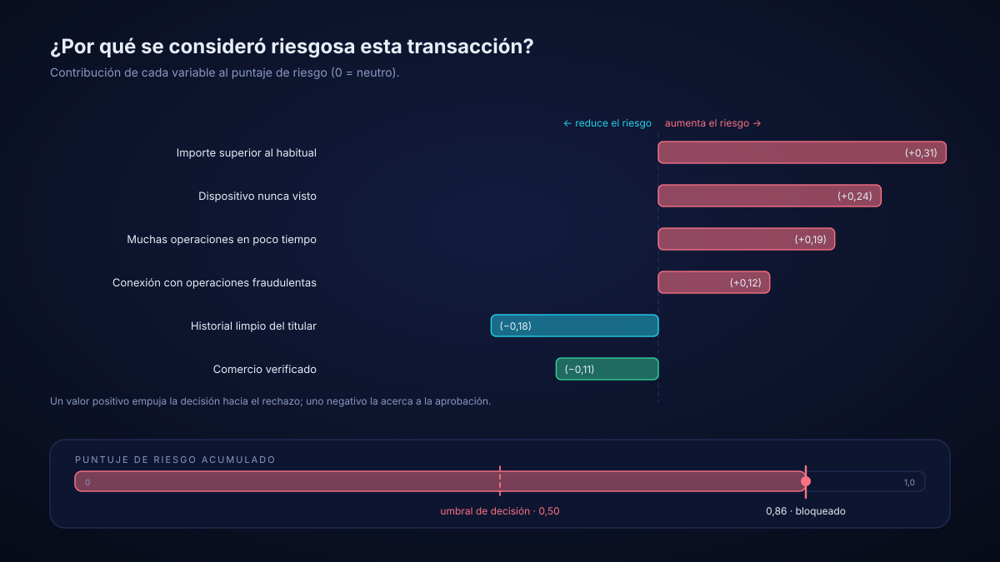
Herramientas como SHAP permiten analizar cuánto contribuyó cada característica a una predicción, aunque las explicaciones deben interpretarse correctamente: no demuestran causalidad ni garantizan que el modelo haya tomado una decisión correcta.
¿Por qué es tan importante? Porque permite que los analistas investiguen las alertas, detecten comportamientos inesperados del modelo, identifiquen posibles errores y comprendan mejor los factores que intervienen en las decisiones. También facilita las auditorías y la supervisión de sistemas automatizados.
El verdadero desafío: construir un sistema completo, no solamente un modelo
Después de conocer todos estos problemas se entiende por qué un proyecto real de detección de fraude requiere mucho más que entrenar un algoritmo de clasificación.
Un proyecto real necesita una arquitectura capaz de recibir, procesar, analizar y responder ante millones de operaciones. Podemos imaginar el flujo completo:
01 Ingesta de datos
Recepción de transacciones desde los sistemas financieros.
02 Procesamiento
Validación, limpieza y transformación de los datos.
03 Feature Engineering
Variables de comportamiento, velocidad, ubicación y patrones históricos.
04 Graph ML
Relaciones entre tarjetas, dispositivos, clientes y comercios.
05 Machine Learning
Evaluación del riesgo mediante modelos predictivos.
06 Explainable AI
Generación de explicaciones sobre los factores de la predicción.
07 Motor de decisiones
Combinación de probabilidades, reglas de negocio y costos económicos.
08 API de inferencia
El modelo como servicio, capaz de responder rápidamente.
09 Monitoreo
Latencia, errores, distribución de datos y rendimiento, considerando el retraso de las etiquetas.
10 Retraining
Actualización controlada del modelo cuando aparecen nuevos patrones maduros.
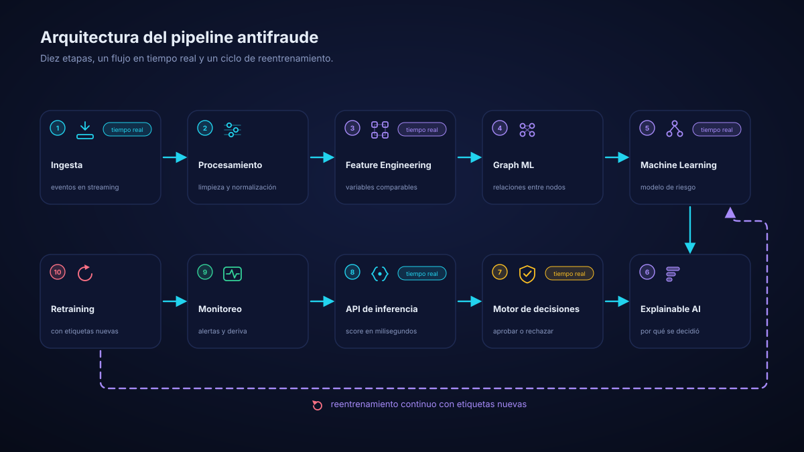
En una arquitectura de este tipo pueden intervenir tecnologías como Python, SQL, Apache Kafka, Redis, Scikit-learn, XGBoost, herramientas de Graph Machine Learning, SHAP, MLflow, Airflow, Docker y Kubernetes.
No es necesario utilizar todas estas herramientas en cada proyecto. La elección depende del volumen de operaciones, los requisitos de latencia, la infraestructura disponible y los objetivos del negocio. Lo importante es comprender que el modelo es solamente una pieza de un sistema mucho más grande.
Detectar el fraude es entender el comportamiento humano en un entorno que nunca deja de cambiar
La conclusión de la teoría, y el punto donde este proyecto se vuelve concreto.
Los proyectos de detección de fraude con tarjetas de crédito representan uno de los escenarios más interesantes para aplicar Ciencia de Datos y Machine Learning. Obligan a trabajar con conjuntos de datos extremadamente desbalanceados, construir variables que representen comportamientos complejos, optimizar decisiones bajo restricciones de tiempo y considerar que equivocarse puede tener consecuencias económicas importantes.
Pero quizás el desafío más fascinante sea otro: los delincuentes también aprenden. Un modelo puede ser excelente hoy y quedarse obsoleto mañana. Los patrones cambian, las estrategias evolucionan y las defensas deben adaptarse constantemente.
Por eso, desarrollar un sistema de detección de fraude no consiste simplemente en encontrar el algoritmo con mayor accuracy. Consiste en construir una infraestructura inteligente, confiable y adaptable, capaz de tomar decisiones rápidas sin perjudicar innecesariamente a los usuarios legítimos.
Epílogo: lo que realmente podemos ver con el dataset que tenemos
Todo lo anterior describe un sistema de producción. Este proyecto trabaja sobre un único dataset público. La diferencia no es un detalle: es el límite honesto de lo que se puede afirmar.
El dataset con el que trabajamos es el Credit Card Fraud Detection de Kaggle, fijado en la versión 3 por el código. Son 284.807 transacciones de dos días de septiembre de 2013, con 30 variables numéricas (Time, Amount y V1–V28, componentes PCA anonimizados) y una etiqueta binaria Class.
Es un dataset excelente para ciertas cosas y estructuralmente incapaz para otras. A continuación está el mapa honesto.
| Desafío del artículo | ¿Lo estudiamos aquí? | Por qué, o qué falta |
|---|---|---|
| Desbalance extremo de clases | Sí, es el eje | 492 fraudes sobre 284.807 operaciones (0,1727 %). Es el problema central y se mide con Average Precision, recall y F2. |
| Latencia en tiempo real | No medible | No hay red de pagos, ni streaming, ni SLA: es diseño de arquitectura, no una medición posible aquí. |
| Feature Engineering con contexto | Parcial | Hay 30 variables, pero V1–V28 no tienen semántica de negocio. Sin historial, comercio, dispositivo ni calendario no hay velocidad, distancia ni estacionalidad. |
| Costo asimétrico del error | Solo el marco | El esquema de tres niveles de riesgo se puede discutir, pero no hay costos reales: todas las métricas usan el umbral por defecto, sin función de costo ni umbral aprobado. |
| Concept Drift | No observable | Una sola ventana de ~48 horas. Sin una segunda ventana comparable no hay deriva que medir, y no existe monitoreo en producción. |
| Calidad de etiquetas y Data Leakage | Sí, y se controla | Las etiquetas ya están maduras en el CSV. El leakage se combate con particiones agrupadas por variables idénticas y con el test externo reservado. |
| Delayed Labels | No observable | El dataset no expone cuándo ocurrió la denuncia ni la investigación. No se puede observar la maduración de las etiquetas. |
| Selective Labeling | No observable | No hay decisiones de rechazo registradas, solo la etiqueta final. El sesgo de selección no es visible en los datos. |
| Graph Machine Learning | Imposible aquí | Sin identificadores de tarjeta, cliente, comercio, dispositivo o dirección no se puede construir ni un nodo ni una arista. |
| Explainable AI | Parcial y poco útil | SHAP se puede aplicar a las 28 componentes PCA, pero no a «importe alto» o «dispositivo desconocido»: sin semántica, la explicación no es accionable para un analista. |
| Arquitectura completa | Pipeline local | Implementamos el flujo como un pipeline Python reproducible con particiones, pipelines sin fuga y experiments versionadas. Sin Kafka, Redis, API ni Kubernetes. |
La lección honesta: la mitad de los desafíos del artículo son, en este dataset, preguntas de diseño y no preguntas de medición. Saber distinguir unas de otras es lo que separa un benchmark serio de una demonstration.
Lo que sí hicimos, y con qué garantías.
- Auditoría y EDA. Verificación de esquema, tipos, nulos, duplicados y rangos de las 30 variables: 284.807 filas, 0 nulos, 1.081 duplicados exactos (0,3796 %) y ninguna fila con variables idénticas pero etiquetas en conflicto.
- Particiones agrupadas. Se calcula un hash solo de las variables de entrada (nunca de la etiqueta) y se usa
StratifiedGroupKFolden dos niveles. Resultado: desarrollo 227.845 filas (393 fraudes) y test reservado 56.962 filas (99 fraudes); dentro del desarrollo, 182.276 filas de entrenamiento (314) y 45.569 de validación (79). Con el split estratificado convencional, 293 firmas de variables idénticas cruzaban la frontera: esa fuga es exactamente lo que el agrupamiento elimina. - Baselines sin fuga. Pipeline
StandardScaler → SMOTE(random_state=42) → clasificador, con el escalador y el muestreo ajustados solo con entrenamiento y la validación en prevalencia natural: Random Forest y AdaBoost, evaluados sobre 45.569 filas y 79 frauds. - Búsqueda acotada del MLP. Dos candidatos,
StratifiedGroupKFold(3)con scoringaverage_precision, refit con todos los datos de desarrollo y una única evaluación del test externo, sin ajuste de umbral.
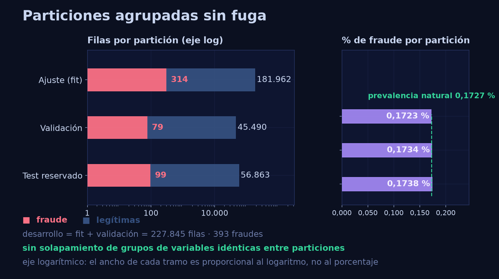
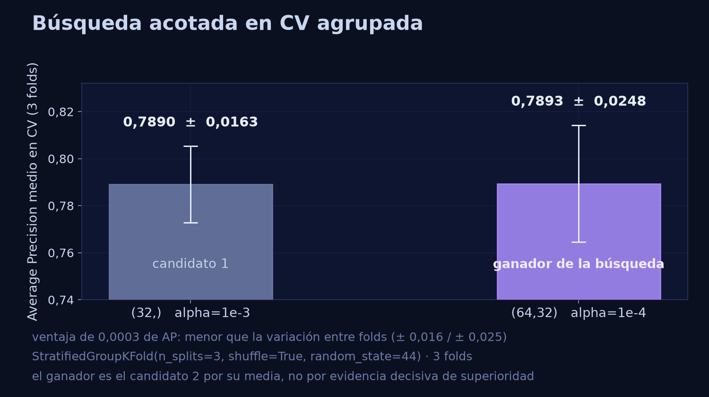
Evaluación final del MLP (64, 32) · alpha=1e-4 |
Average Precision | Precisión | Recall | F2 |
|---|---|---|---|---|
| Test reservado · 56.962 filas · 99 fraudes | 0,8204 | 0,7155 | 0,8384 | 0,8105 |
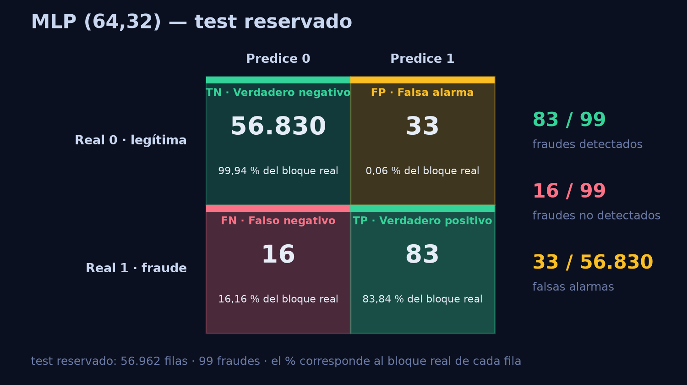
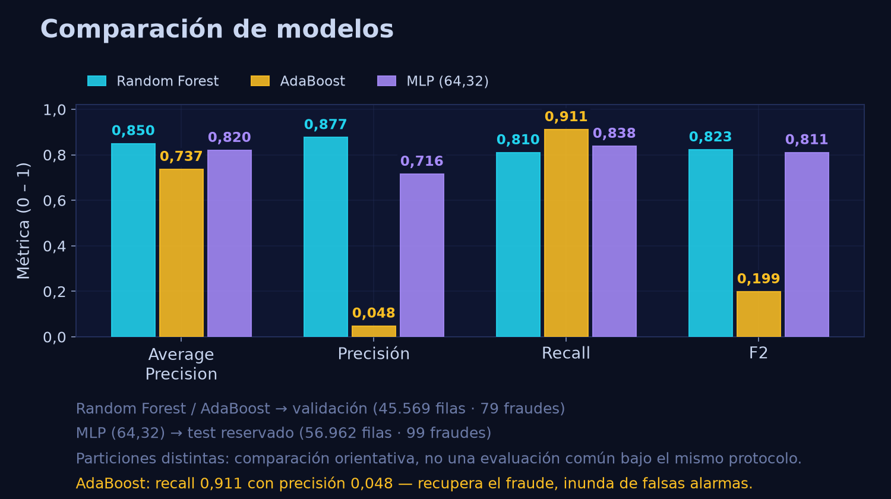
Y lo que todavía no podemos afirmar. El holdout contiene 99 frauds: es una estimación incierta, no rendimiento de producción. Ningún modelo está aprobado para decisiones de pago. No ajustamos umbrales, no hay función de costo, no hay validación cruzada para los árboles, la búsqueda del MLP fue acotada a dos candidatos y no exhaustiva, y el dataset cubre apenas dos días de 2013. La ventana temporal no se puede reutilizar para iterar: el test externo se evaluó una vez y debe seguir reservada.
El trabajo futuro que el propio proyecto deja abierto es concreto: validar los árboles con validación cruzada, diseñar una comparación justa entre particiones, ajustar umbrales solo con datos de desarrollo y obtener un conjunto de datos posterior para poder hablar de deriva con evidencia en lugar de con teoría.
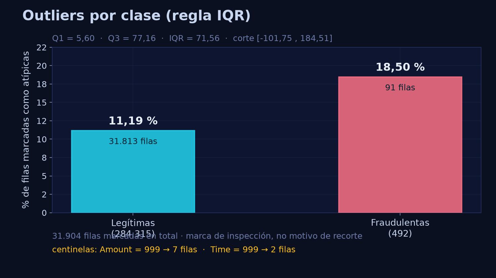
Amount está poblada: el 18,50 % de los fraudes queda fuera de los bigotes de Tukey frente al 11,19 % de las legítimas. Recortar no es gratis.Por eso este artículo termina donde empieza el proyecto. La teoría de arriba describe el sistema ideal; el repositorio describe, con evidencia reproducible, el sistema que se puede construir hoy con un único dataset público. La distancia entre ambas es el trabajo pendiente — y conviene que esté escrita, medida y versionada, no escondida detrás de un gráfico bonito.